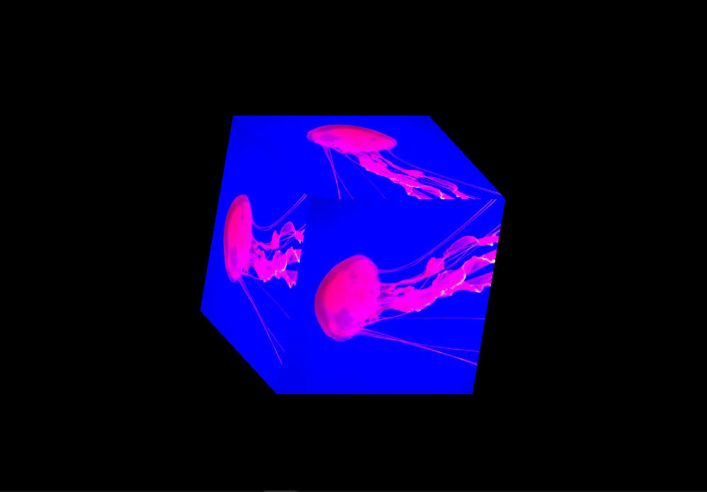
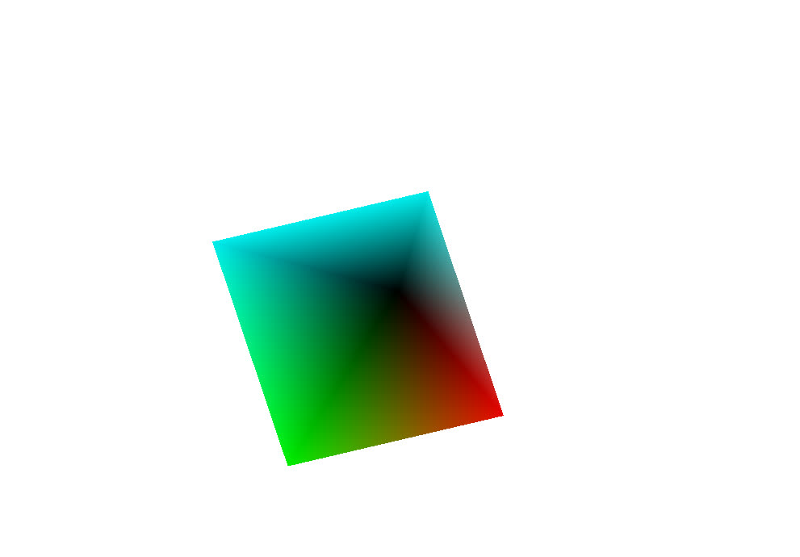

Own build · 2021
Ghost Engine 3D
A 3D game engine built from scratch against the raw Windows API and DirectX 11 — no framework, no engine underneath. Window, swap chain, vertex and index buffers, shaders and transforms, then everything a scene needs on top of that.
- Language
- C++
- Graphics API
- DirectX 11
- Platform layer
- Win32, written directly
- Tooling
- Dear ImGui
- Renderer
- Textured · lit · depth-buffered
Built up from nothing
The initialisation path — window, swap chain, vertex buffer, shader, index buffer, transform — follows PardCode and Frank Luna's Introduction to 3D Game Programming with DirectX 11. Past that point the engine goes its own way.
What it does
.objmodel import- Texturing
- Smooth camera movement
- Input system — keyboard and mouse
- Lighting, including ambient light
- Window resizing with correct swap-chain recreation
- Depth buffer
- GUI system built on Dear ImGui
Why the tool layer mattered
The ImGui panels visible in every screenshot below are not decoration. Light direction, camera translation and ambient values are all editable at runtime, which turns a shader question that would otherwise be a recompile-and-relaunch cycle into a slider you drag. On a project where you are also writing the renderer, that feedback loop is what makes progress possible at all.
.obj geometry under the lighting pass.
